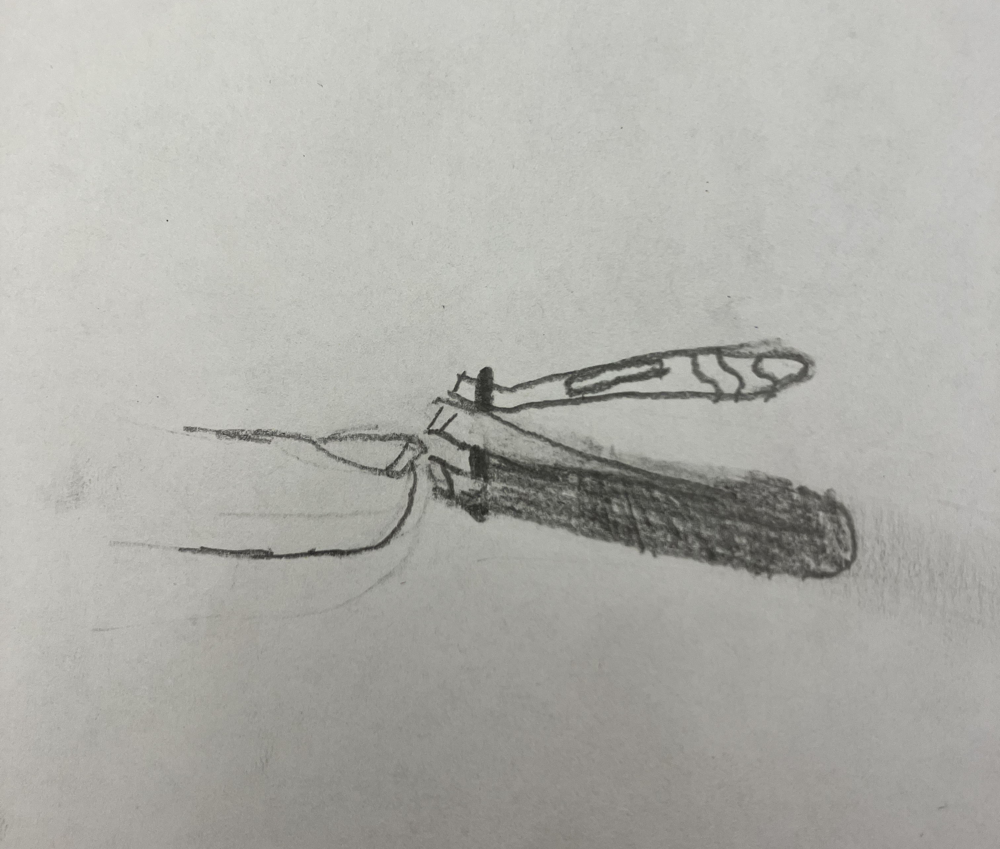
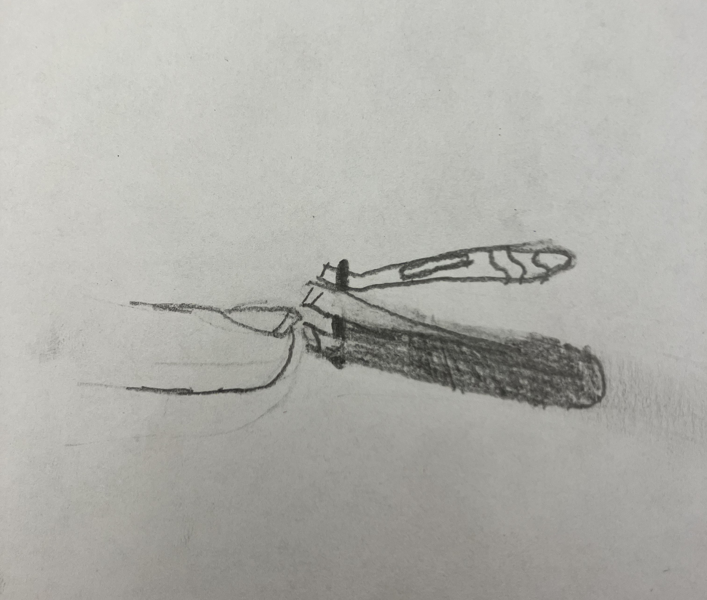

The item of trash that I have chosen is a pair of nail clippers. The nail clippers are a reflective silver with a black plastic casing around them. The lever is a dark gray color with a rectangular section for filing nails and squiggly line indents at the end for grip. The nail clippers are a hard object that feel cold and smooth if you touch the metal part and rough if you touch the filing rectangle.
I acquired the nail clippers as a gift from my parents because I needed my own set. I have used them for many years now and decided to take them with me to my new room at school as I started another semester at Rutgers. They came along with other tools as part of a nail maintenance set which I regularly used to cut my nails. Now broken into several different pieces from an incident that occurred last time I used them, I’m getting rid of them and replacing them with a new pair.
It was a normal morning at my suite on Busch campus. My immediate roommate was home for the weekend, and I wake up relatively early compared to the rest of my suitemates, so everyone was either asleep or not around.
I had been meaning to cut my nails for a few days now but would always forget by the time I made it back to my room each day. Now in my room, with nowhere to be and time to spare, I at some point glanced at my hand and remembered what I had forgotten to do all those days before.
So, I went over to my closet and grabbed my nail clippers, which I kept on the shelf above my hanging clothes. I then walked back over to my desk chair on the opposite side of room so I would have somewhere to sit, which was conveniently located right next to my trash can. Without hesitation, I proceeded to clip my nails: one finger, two finger, three… SNAP. As I pressed down the clippers on the third finger, they burst into pieces, falling out of my hand and onto the floor.
I’ve always been told I have strong nails, but I never once thought that they would decide to fight back against a pair of clippers. Maybe they just had enough. I would probably do the same if I spent all that time growing just to be cut short every time.
Nail clippers, like the broken pair mentioned above, are seen as a simple grooming tool to most. But, there are more to them than meets the eye. Below are some fun facts about the history, variations and physics behind nail clippers: